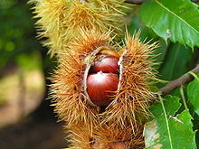

Gaztaina gaztainondoaren fruitua da, Pagazeo familiako zuhaitza,
Ipar Hemisferioan ohikoa dena. Fruitua arantzadun morkots baten
barnean agertu ohi da, honek 5 eta 11 zentimetro arteko diametroa
du eta 2tik 7ra gaztainez osatuta egon ohi da. Irailetik azarora bitartean
erortzen da zuhaitzetik.
Ipar Hemisferioan ohikoa dena. Fruitua arantzadun morkots baten
barnean agertu ohi da, honek 5 eta 11 zentimetro arteko diametroa
du eta 2tik 7ra gaztainez osatuta egon ohi da. Irailetik azarora bitartean
erortzen da zuhaitzetik.